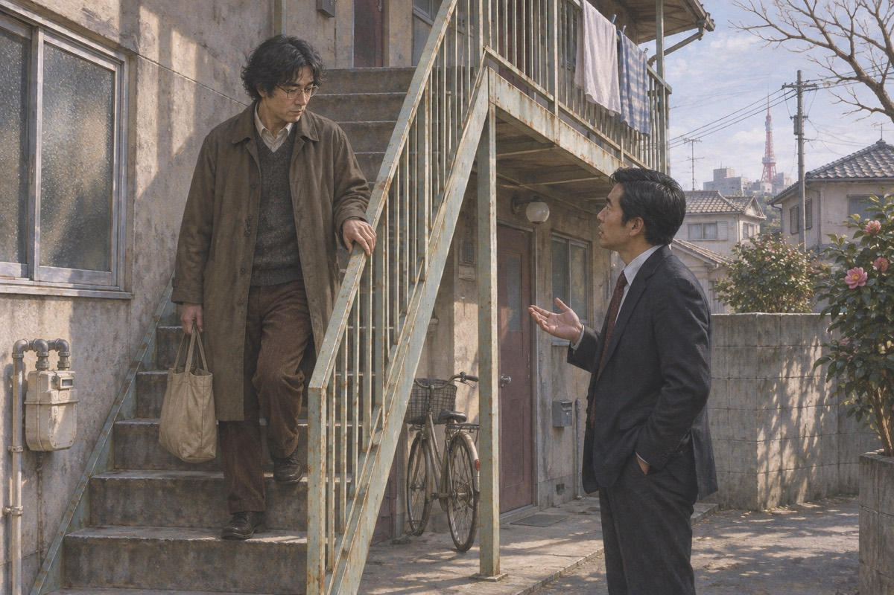
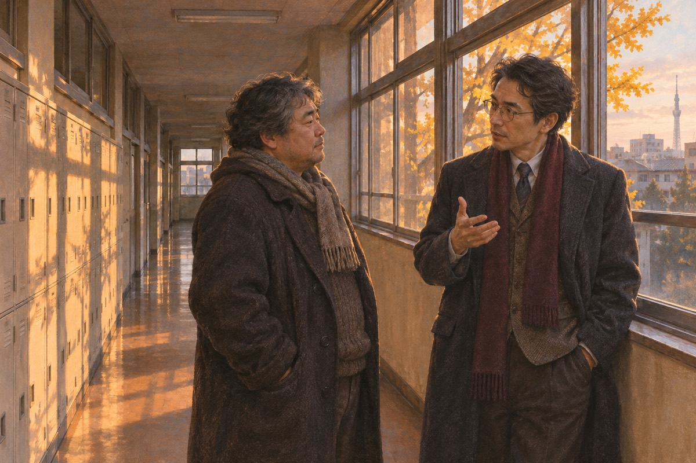
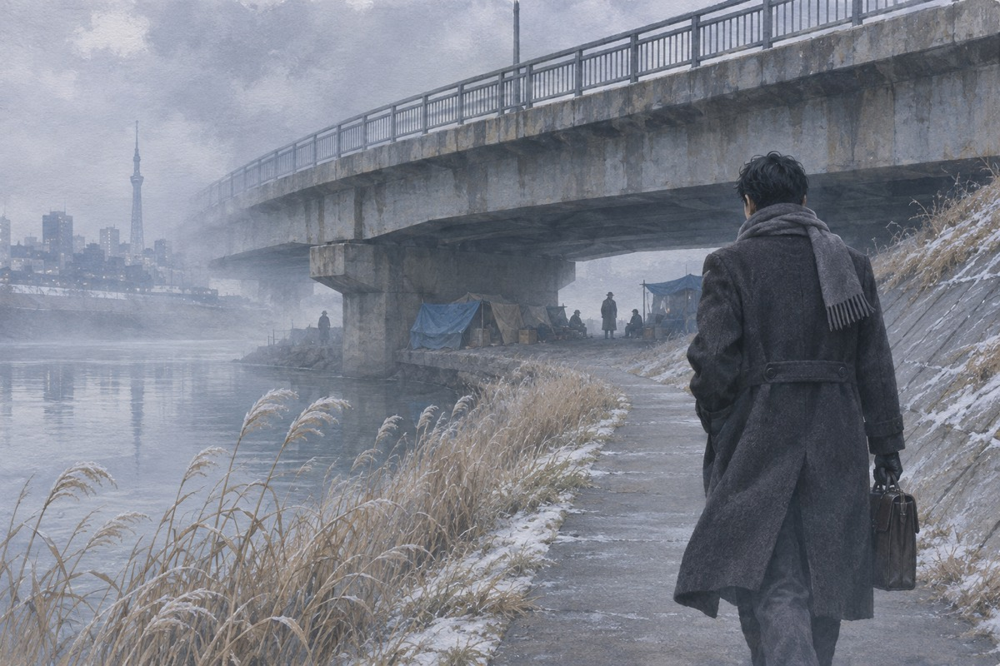

门铃
石神哲哉那年四十四岁，在私立高中教数学，一个人住在一栋旧公寓的二楼。那天他准备好了绳子，打好结，踩上凳子。门铃响了。他打开门，外面站着一对母女，鞠了一躬说：我们是昨天搬来的，以后请多关照。女孩手里提着一盒荞麦面。他关上门，把绳子解下来，收进抽屉。那天晚上他睡得很沉，第二天照常去上课。学生背地里叫他达摩，因为他总坐在窗前一动不动，像一尊塑像。他不在乎这个外号。他在乎的是每天上午那四十五分钟，黑板上的题有没有解干净。
便当店
花冈靖子在车站前的便当店上班，从早上九点做到下午三点。石神每天中午都来，站在柜台前说三个字：招牌便当。付钱，拿走，从不多说一句。老板米泽说：那位老师真怪。靖子说：他只是不爱说话。她不知道，他每天绕路十五分钟，只为了走过这家店的门口。有一次下大雨，靖子多给了他一个可乐饼，说：这个不要钱。他接过，说了声谢谢，走出去在雨里站了一会儿。第二天他来，把一枚一百日元硬币放在柜台上，说：昨天的。
前夫
富樫慎二是靖子的前夫，离婚三年，欠了一身债。他在便当店门口出现过两次，第二次被美里看见。美里回家说：那个叔叔又来了。靖子的手抖了一下，把碗放回桌上。石神那天在街对面站着，看见富樫拉着靖子的手腕说：只要你给我钱，我就不来了。他把这句话记住了。石神那天晚上回家，把富樫的长相、走路的样子、说话的口音在纸上写了一遍。写完他看了一会儿，把纸撕了。有些事他不需要记在本子上。
那一夜
那天晚上富樫又来了，喝了酒，进门就翻抽屉。靖子说没钱。他打了她一巴掌，说：你女儿不能去挣钱吗。美里从房间里冲出来，用花瓶砸在他后脑上。他倒下去，又爬起来，掐住美里的脖子。靖子从暖桌下抽出电线，绕上他的脖子。母女两个人一起拉，拉了四分钟。屋里安静下来之后，美里先哭出了声。靖子坐在地上，看着那个人不动了。她想去打电话，手伸到一半又缩回来。美里说：妈妈，我们会坐牢吗。她说：不会的。她说这句话的时候，自己也不信。
出处 · 原著第 2 章
敲门
晚上十点，门铃响了。靖子从猫眼里看见是隔壁的石神。她开门，浑身在抖。石神看了一眼地上的尸体，又看了一眼她们，说：我都听见了。他站在门口，没有进来，说：这件事我来处理。你们回房间，把门关上，不管听见什么都不要出来。他把外套脱下来，搭在椅背上。石神进屋，先蹲下去摸了摸死者的颈动脉，然后站起来说：还有一件事。你们把家里所有的灯都打开，窗帘拉开。今天晚上，你们什么都不知道。
另一个人
三月十日的晚上，石神去了旧江户川的河堤。那里住着几个流浪汉，其中一个被人叫作「技师」，从前在工厂干过，不爱说话，东西摆得很整齐。石神跟他搭了几句话，然后从背后动了手。他砸烂那张脸，烧掉指纹，把富樫的衣服、鞋、月票换上去，用自行车把尸体运到河堤上。凌晨四点他回来，手上有洗不掉的机油味。他敲了敲靖子的门，说：明天警察会来。
出处 · 原著第 4 章
河岸
三月十一日早上，有人在河堤上发现一具男尸。脸被砸得认不出来，十指指纹被烧毁，身上没有证件。旁边停着一辆崭新的自行车，车锁被撬开。警察在尸体口袋里找到一张月票，查出来是富樫慎二的。死者穿着新鞋，鞋底一点土都没有。草薙看着那双鞋说：这不像是他自己穿的。草薙在河堤上站了很久。潮水正在退，泥地上有一道很长的拖痕，一直拖到水边。他问岸谷：一个人要多大的力气，才能把一个成年男人拖这么远。岸谷说：也许不是一个人。
认尸
岸谷带着富樫的照片去找靖子。靖子看了一眼，说：是我前夫。她很平静，甚至问了一句：他怎么死的。岸谷说：被人杀了。她低下头，说：哦。岸谷后来跟草薙说：她太平静了。草薙说：也可能是她真的恨他。岸谷说：恨一个人，脸上会有表情。她给岸谷倒了一杯茶，手很稳。岸谷注意到她的指甲修得很整齐，头发也刚做过。一个刚死了前夫的女人，会在前一天去做头发吗。这句话他后来没有写进报告。
问话
刑警第二次上门时，石神正好从楼梯上下来，手里提着垃圾袋。他问了一句：出什么事了吗。岸谷说：隔壁的先生被人杀了。石神说：那真不幸。他下楼，倒垃圾，回来，关门，整个过程不超过三分钟。岸谷后来说：那个人太镇定了。草薙说：镇定不代表有罪。石神走到楼下，把垃圾袋放进桶里，又回身把桶盖压好。他做这些的时候动作很慢，像是在等什么。岸谷后来想起这一幕，总觉得那个人不是在倒垃圾，是在确认什么。

电影票
石神给了靖子两张电影票和三张 KTV 小票，说：三月十日那天，你们去看电影，然后去唱歌，唱到十一点。靖子说：可我们那天……石神说：那天你们去了。他让她背下电影的情节、唱了哪几首歌。他说：警察会分开问你们，你们要说得一字不差。靖子问：为什么要这样。他说：因为你们没有杀人。那天晚上靖子把票根和小票摊在桌上看了很久。她忽然明白，这个人不是在教她撒谎，是在替她把这个谎做成真的——连电影里女主角穿的什么颜色的衣服，他都说得出来。
不在场证明
母女的不在场证明完整得像教科书：电影票根、KTV 小票、店员记得她们点过什么。草薙派人去核实，全都对得上，连电影哪天换片都对得上。岸谷说：太顺了。草薙说：顺是好事。可他心里也不舒服——一个刚刚死了前夫的女人，不该有这么干净的时间表。管理官间宫在走廊上拦住草薙，问：什么时候能结案。草薙说：还在查。间宫说：上面在问。草薙说：让他们问。
断线
警方查到富樫三月九日住过一家旅馆，十日中午退房，之后的行踪一片空白。旅馆老板说他退房时提着一个纸袋。草薙把这条线追了半个月，追到一家当铺、一家小酒馆、一个已经搬走的女人。所有线索都指向三月十日晚上，然后又全部断掉。他后来才明白：那天晚上之后的事，本来就不存在。他在笔记本上画了一条时间线，把每个节点标上去。画完他看着那条线，发现中间有一个洞——三月十日晚上十点到十一日清晨，整整八个小时，没有任何人见过富樫慎二。
汤川
汤川学是帝都大学物理系的副教授，草薙的老同学。他来刑警队送一份实验报告，看见白板上写着石神哲哉的名字，停住了。他说：这个人我认识，同届，数学系的天才。草薙说：你跟他熟吗。汤川说：不熟，但我记得他。他看数学题的样子，像在看一个活人。草薙问：他是什么样的人。汤川想了想说：我们那届有个传说，说石神做题从来不用草稿纸，他不写过程，看一眼就把答案写出来。草薙说：那他现在在做什么。汤川说：在教高中生。
两个天才
汤川去石神的学校找他。两人在走廊上站着聊了半小时，聊的是一个数学猜想。石神说：想出这个问题的人，和解决它的人，哪个更了不起。汤川说：提出问题的那一个。石神说：不对，是解决的那一个。汤川看着他，说：你这些年，在解什么题。石神笑了一下，没有回答。走廊尽头有学生在打球，声音一阵一阵传过来。石神忽然说：你有没有觉得，人到了这个年纪，能做的事就越来越少了。汤川说：我没有想过。石神说：我想过。

玻璃门
汤川跟着石神去了便当店。他看见石神站在玻璃门前，用手理了一下头发，又拉了一下外套下摆，才推门进去。汤川站在街对面愣了很久。他认识的石神从不照镜子。一个四十四岁的男人，如果忽然开始在意自己的样子，那一定是为了某个人。他站在那儿，第一次觉得这个案子难看。他退到街角，看着石神提着便当走出来，走得很慢，像舍不得走完这段路。汤川那天没有上去打招呼。他知道有些事情，一打招呼就碎了。
跟踪
石神开始跟踪工藤邦明。他记下工藤的车牌、住址、每周几去哪家店。他拍了照，洗出来，装进信封，寄到工藤的公司。信上只有一句：不要再接近花冈靖子。工藤把信拿给靖子看。靖子盯着那些照片，手一直在抖——她认出了拍摄的角度，那是从她家窗户能看见的位置。照片拍得很好，取景、对焦都讲究。工藤看了半天，说：这个人有耐心。靖子没有说话。她想起石神每天中午站在柜台前的样子，也是那样，不急，不催，只是等。
工藤
工藤邦明是靖子以前在俱乐部认识的客人，做印刷生意，离过婚。他找到便当店，说：我找了你三年。靖子说：我现在这样，不方便。他说：我不在乎。他请她吃饭，送她回家，在楼下站了一会儿才走。靖子进屋，看见镜子里自己的脸，忽然觉得很陌生——她已经很多年没有为自己活过。她回家把这件事告诉了美里。美里说：妈妈，你要是喜欢他，就跟他走吧。靖子笑了一下，说：我们这样的，走不了。美里低下头，把碗里的饭拨来拨去。
窗帘
石神站在窗帘后面，看着楼下的两个人。他把手里的杯子放回桌上，很轻。第二天他给靖子打电话，说：那个人不适合你。靖子说：这是我的事。电话那头沉默了很久，然后他说：你说得对。他挂掉电话，坐在黑暗里，一直坐到天亮。那天的数学课，他把一道题写满了整块黑板。第二天上课，他讲了一道极难的题，讲完问全班：听懂了吗。没有人回答。他说：没关系，这道题本来就不是给你们出的。他把粉笔放回盒子里，摆得很整齐。
白板
草薙把石神的名字写在白板上。岸谷说：他没有动机。草薙说：一个每天绕路买便当的男人，你说他没有动机？汤川在旁边听着，一句话没说。等草薙走了，他才开口：如果真是他，这个案子你们破不了。岸谷问为什么。汤川说：因为他会把每一步都算好，包括你们会怎么想。草薙问：你为什么这么肯定。汤川说：因为他如果动手，不会留下能让你们查到的东西。你们现在查到的每一样，都是他想让你们查到的。
少了一个人
汤川一个人去了旧江户川的河堤。桥下住着几个流浪汉，彼此叫罐男、技师、老酒鬼。他数了数，少了一个。他问罐男：技师呢。罐男说：好久没见了，大概搬走了。汤川问：他的东西还在吗。罐男说：都在，一件没拿。汤川站在河堤上，风很大，他忽然明白了一件事。他蹲下去看技师的铺位：被子叠得很整齐，饭盒洗过，倒扣在砖头上。一个人如果要走，不会把饭盒洗了。汤川在那儿站了很久，最后说了一句：对不起。

新鞋
汤川去找草薙，问了三件事：自行车是不是新买的，死者的鞋是不是新的，指纹是不是被烧过。草薙说是。汤川说：一个要杀人的凶手，为什么要给死者买新鞋、新自行车。草薙说：为了不让人查出死者是谁。汤川说：不对。是为了让人查出死者是谁——查出一个错的。草薙说：你是说，凶手在替死者改名。汤川说：不是改名，是换人。他停了一下，说：你们要找的那个死者早就死了，你们一直在查的这具尸体，是个替身。
真相
汤川把推理说给草薙听：三月九日晚上死的确实是富樫，可那具尸体已经被石神处理掉了。他杀了一个流浪汉，毁掉脸和指纹，换上富樫的衣服、钱包、月票，扔在河堤上。法医按尸体判断死亡时间在十日晚上，所以警察一直在查十日的案子。而母女十日那天去看电影、唱卡拉OK，票根和小票全是真的——她们的不在场证明，是给一个她们没杀人的夜晚准备的。
出处 · 原著第 19 章
为什么
汤川去找石神，问他：为什么。石神说：你不会懂。汤川说：我懂。你是想替她们顶罪。石神摇头，说：不是顶罪。是我杀了人，这是事实。汤川说：你杀了那个流浪汉。石神沉默了很久，说：是。汤川说：他跟你无冤无仇。石神说：他什么都没有，我也是。汤川说：你不是。你还有数学。石神笑了一下。石神说：我这一生没有做过一件像样的事。汤川说：你解开了那道题。石神说：那道题不值得。他抬起头，说：她值得。
自首
石神去警局自首。他把每一个细节都说得清清楚楚：怎么杀的人，怎么处理尸体，自行车在哪买的，鞋在哪买的。警方核对，全部吻合。他被带走那天，靖子站在门口，隔着人群看他。他没有回头。岸谷说：这个案子结了。草薙说：结得太顺了。审讯室里他坐得很直，回答问题时不看人。警察问他为什么杀人，他说：因为他打女人。这句话是真的，也是假的。他在心里给自己判了分：这一步没错。
最后一封信
石神从拘留所寄出一封信，只有几行字：花冈女士，请你们忘了我，好好生活。工藤先生是个可靠的人，如果能和他在一起，我会很高兴。这辈子能被你打扰，是我的幸运。信纸很薄，字写得很工整，像一道算完的题。靖子看完，把信折起来放进抽屉，然后坐在椅子上，一动不动地坐到天黑。美里在旁边看着，说：妈妈，他在跟我们告别。靖子说：我知道。她把信放进抽屉，又拿出来，重新读了一遍。那几行字她后来能背下来，一个字不差。
美里
美里在浴室里割了腕。靖子发现时水已经红了。她抱着女儿喊救护车，美里在她怀里说了一句：妈妈，我们是不是错了。医生说没有生命危险。那天晚上靖子坐在病房里，看着女儿睡着，忽然想起石神说过的一句话：你们没有杀人。她想，他说的是假话，可他用真话把它包起来了。她想起那个晚上，石神站在门口说：我都听见了。那时候她以为他是来救她们的。现在她想，也许他是来找一个活下去的理由，她们刚好递了过去。
靖子
靖子去了警局。她说：人是我杀的。刑警看着她，很久没有说话。她把那天晚上的事从头说了一遍：富樫怎么进门，怎么打她，美里怎么砸他，她怎么拉电线。她说完，抬起头说：石神先生是无辜的，他不知道我们在做什么。做笔录的年轻警察手停在半空，笔尖在纸上洇出一个黑点。草薙把笔录合上，说：你知道你在说什么吗。靖子说：我知道。他说：他会白坐牢。她说：所以我来了。草薙看着她，忽然想起四个月前她第一次来认尸时那张平静的脸。
嚎哭
石神被带进审讯室，看见靖子坐在对面。他愣了一秒，然后整个人塌下去，喉咙里发出一声很长的、不像人的声音。他弯下腰，额头抵在桌沿上，肩膀一直在抖。草薙站在门外，把烟点上，又按灭了。汤川在走廊尽头站着，说了一句话：他把所有的题都算对了，只算错了一件——那个人也会为他难过。那天之后，汤川再没有去过那家便当店。草薙问他为什么。他说：我不配。他把手里的实验数据翻了一页，说：有些题解出来，是错的。